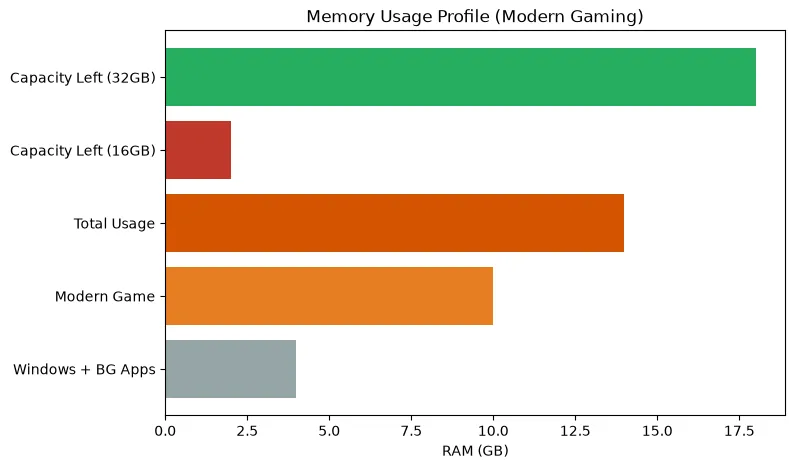
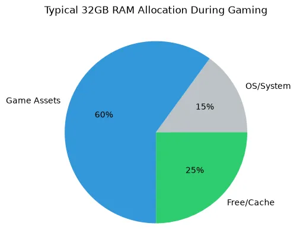
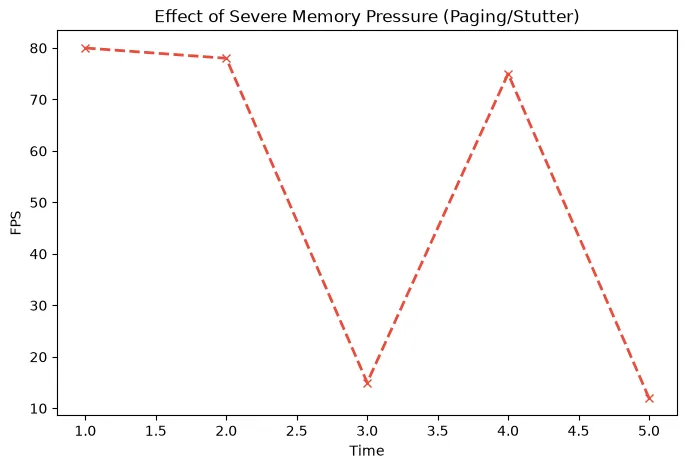

How Much RAM Do You Need for Gaming in 2026? 16GB vs 32GB vs 64GB
Is 16GB of RAM holding your PC back? We explore the true memory requirements for modern gaming, background applications, and when a RAM bottleneck actually ruins performance.
For nearly a decade, the standard advice for building a gaming PC was simple: "Just get 16GB of RAM." But as we move deeper into the current generation of console-ported games, massive open-world titles, and memory-hungry background apps, that advice is rapidly changing.
If you are experiencing severe stuttering despite having a good CPU and GPU, you might be facing a RAM bottleneck. In this guide, we break down exactly how much RAM you need for gaming, comparing 16GB vs 32GB vs 64GB configurations.
Quick Answer / TL;DR
In 2026, 32GB is the new sweet spot for a gaming PC. While 16GB is still the bare minimum for budget builds, modern AAA games combined with background apps (Discord, Chrome, Spotify) frequently exceed 16GB of total system usage. If you stream, edit video, or play heavily modded games (like Cities: Skylines or heavily modded Skyrim), 64GB may be necessary. Upgrading capacity won't magically increase your maximum FPS, but it will eliminate stuttering caused by memory limits.
What Does RAM Actually Do in Gaming?
Random Access Memory (RAM) acts as your computer's short-term workspace. When you launch a game, the files are pulled from your slow storage drive (SSD/HDD) and loaded into the fast system RAM, and eventually into the graphics card's VRAM.
If your CPU needs data to calculate a frame and that data is in the RAM, it gets it almost instantly. But if your RAM is completely full, Windows is forced to use the "Page File"—a section of your much slower SSD—as temporary memory. This massive drop in speed causes severe frame time spikes, which you experience as massive stuttering or freezing in-game.

8GB vs 16GB vs 32GB vs 64GB: The Breakdown
8GB: Obsolete for Gaming
Do not attempt to build or buy a gaming PC in 2026 with only 8GB of RAM. Windows 11 alone will use roughly 4GB just sitting on the desktop. The moment you launch a modern game, the system will run out of memory, rely on the page file, and stutter uncontrollably.
16GB: The Absolute Minimum
16GB is the entry-level baseline. If you are on a strict budget, playing older games, or exclusively playing lightweight esports titles (Valorant, CS2, League of Legends), 16GB is completely fine.
However, if you want to play *Hogwarts Legacy*, *Cyberpunk 2077*, or *The Last of Us Part I*, 16GB will force you to compromise. You will need to close all background applications—no Chrome tabs, no Discord streams—before launching the game to prevent stuttering.
32GB: The Modern Standard (Recommended)
For any mid-range or high-end build, 32GB is the correct choice. Memory is relatively cheap, and moving to 32GB provides massive peace of mind. With 32GB, you can have a massive AAA game open on your main monitor, a YouTube video playing on your second monitor, Discord running, and multiple browser tabs open without ever facing a memory bottleneck.
64GB: For Creators and Modders
Do you need 64GB for pure gaming? No. Unused RAM is wasted RAM. Having 64GB of RAM will not give you higher FPS than 32GB if the game only requires 14GB. However, you should consider 64GB if you:
- Play heavily modded simulation games (Cities: Skylines, Kerbal Space Program, Microsoft Flight Simulator).
- Are a professional video editor (Premiere Pro, DaVinci Resolve) or 3D artist.
- Run multiple heavy virtual machines alongside your gaming.

RAM Capacity vs. RAM Speed (DDR4 vs DDR5)
It is vital to understand the difference between memory capacity (GB) and memory speed (MHz/MTs). They solve different problems.
- Capacity (GB): Prevents stuttering. If you have enough capacity to hold the game data, adding more GB will not increase your FPS.
- Speed (MT/s) and Latency (CL): Increases CPU efficiency. The faster your RAM, the faster the CPU can access the data. Upgrading from slow DDR4-2133 to fast DDR4-3600, or moving to a modern DDR5-6000 kit, will actually increase your maximum FPS and improve your 1% lows, especially in CPU-limited scenarios.
The Importance of Dual-Channel Memory
Perhaps more important than capacity is Dual-Channel configuration. You should always use two sticks of RAM (e.g., 2x8GB or 2x16GB) rather than a single stick (1x16GB). Using a single stick of RAM cuts your memory bandwidth in half, severely crippling your CPU's performance and causing massive CPU bottlenecks.
Always install your two sticks in the correct motherboard slots (usually slots 2 and 4) and enable XMP or EXPO in your BIOS to ensure they run at their advertised speed.

How to Identify a RAM Bottleneck
If you aren't sure if you need more RAM, you can diagnose the problem easily using Windows Task Manager or monitoring software like MSI Afterburner:
- Open your most demanding game and play for 15 minutes.
- Open Task Manager (Ctrl + Shift + Esc) and look at the "Performance" -> "Memory" tab.
- Look at the "In Use" metric. If your 16GB system shows 15.5GB "In Use", you are experiencing severe memory pressure.
- If you experience massive freezes or stutters while walking into new areas of a map or quickly turning the camera, it is often a sign of data struggling to load due to RAM limits.
Frequently Asked Questions
Does more RAM increase FPS?
Only if you currently don't have enough. If you upgrade from 8GB to 32GB, your FPS will become much more stable, and stutters will disappear. However, if you already have 32GB and upgrade to 64GB, your FPS will not change at all.
Is 16GB RAM enough for gaming and streaming?
It is very tight. Running a demanding modern game, OBS Studio, Discord, and a browser to monitor your chat will frequently exceed 16GB of usage. If you plan to stream from a single PC, 32GB is highly recommended to ensure a smooth broadcast.
Why is my game crashing with an "Out of Memory" error?
This happens when your physical RAM and your Windows Page File are both completely full. To fix this immediately without buying hardware, increase the size of your Windows Page File on your fastest SSD, and close all background browser tabs before gaming.
Does the Bottleneck Calculator measure RAM?
Our PC Bottleneck Calculator focuses primarily on the core relationship between the CPU, GPU, and resolution. However, a severe RAM bottleneck will artificially limit a powerful CPU. Always ensure you meet the minimum RAM capacity for your tier of hardware.
Final Takeaway
For PC gamers in 2026, the era of 16GB being the comfortable standard is over. While you can survive on 16GB by micromanaging your background apps, upgrading to a fast 32GB dual-channel kit is the most cost-effective way to ensure a perfectly smooth, stutter-free gaming experience regardless of what you have running in the background.